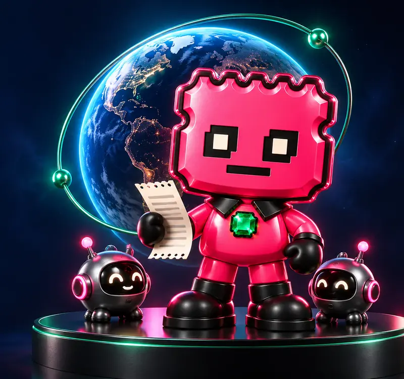

Contrasta la dirección antes de creer el nombre.Check the address before you trust the name.
STUBX Verify lee en directo, y solo en lectura, cualquier token SPL o Token-2022. También compara con fichas de ejemplo: la oficial está releída el 2026-10-09, con el saldo de la curva y el de la creadora. No pide una cuenta y no dice qué comprar.STUBX Verify reads any SPL or Token-2022 token live, and read-only. It also compares with example cards: the official one was read again on 2026-10-09, with the curve balance and the creator balance. It does not ask for an account and it does not say what to buy.
La acción abre Verify: lectura en vivo y solo lectura, más las fichas fechadas del 2026-10-09 (commit 86df576). No es una puntuación. La PR 14 se fusionó en main el 2026-10-09.The action opens Verify: a live read-only reading, plus the dated cards of 2026-10-09 (commit 86df576). It is not a score. PR 14 was merged into main on 2026-10-09.

Agente Talón. Ilustración con elementos generados con IA. No es un sello de aprobación.Agente Talón. Illustration with AI-generated elements. It is not a seal of approval.
Contrato oficialOfficial contract
CA oficial del token, dirección del mint. Única.The official token CA (the mint address). There is only one.
Compárala entera con la de la cuenta oficial en X: @stubxai. Cualquier otra CA con el nombre STUBX no es oficial. Fuente: token.json, campo mint, actualizado el 2026-10-05.Compare the full address with the one posted by the official X account, @stubxai. Any other CA using the name STUBX is not official. Source: token.json, mint field, updated 2026-10-05.
Un personajeA character
Agente Talón pide pruebas antes de creer una promesa. Las imágenes se generan con IA. El lema es «No stub, no story».Agente Talón asks for proof before believing a promise. The images are generated with AI. The motto is “No stub, no story”.
Un tokenA token
Creado el 2026-09-23 en Pump.fun. Sin autoridad de emisión ni de congelación. No da derechos. La descripción grabada dice «AI-native» y ya no se puede cambiar: hoy no hay un agente autónomo.Created on 2026-09-23 on Pump.fun. No mint authority and no freeze authority. It grants no rights. The on-chain description says “AI-native” and can no longer be changed: there is no autonomous agent today.
Un prototipoA prototype
El repositorio github.com/stubxai/stubx-agent no tiene wallet ni claves, no firma y no envía transacciones. Licencia MIT.The repository github.com/stubxai/stubx-agent has no wallet and no keys, it does not sign, and it does not send transactions. MIT license.
Herramientas de esta misma webTools on this website
Misma navegación, mismos estilos y el mismo selector de idioma. Lo que no está construido no tiene un botón que finja funcionar.Same navigation, same styles, and the same language switch. What is not built has no button pretending to work.
Lectura en vivo + fichas del 2026-10-09Live reading + cards of 2026-10-09
Verify
Pega la dirección de un token SPL o Token-2022. La página lee la cadena en directo y solo en lectura, y la compara con las fichas fechadas. No es una puntuación.Paste the address of an SPL or Token-2022 token. The page reads the chain live and read-only, and compares it with the dated cards. It is not a score.
Una misión de cinco pasos para distinguir el mint del registro de un clon. El progreso se queda en este navegador.A five-step mission to tell the registry mint from a clone. Progress stays in this browser.
Qué está en idea, qué está en el repositorio y qué está en stubxai.com. Hay una plantilla vacía para copiar. No avala otros tokens ni promete fechas.What is an idea, what is in the repository, and what is on stubxai.com. There is an empty template to copy. It does not endorse other tokens and it promises no dates.
En este navegador · 2026-10-09In this browser · 2026-10-09
Studio
Crea una imagen para tu token, sin cuenta. Los recursos de STUBX vienen por defecto. El nombre, el logo y la exportación se quedan en este navegador.Create an image for your token, without an account. STUBX assets start as the default. The name, the logo, and the export stay in this browser.
No hay notas ni historial de consultas. Lab solo guarda el progreso de la misión.There are no notes and no query history. Lab only stores mission progress.
Pump.fun paga al creador una comisión por las operaciones del token. Cobros hasta el 2026-10-03: uno, de 0,0316 SOL, el 2026-09-23 (transacción 3rDQEqHoTQFVgkiAmtBX3sRia9sScEs3K5rcEaDu9riYSNMBrQ3uLQbu9aSBB3zNnCisafbMQo7puURyGF5FtLmH). Uso: la comisión pasó, junto con el resto del SOL de la wallet creadora, a wallets personales del creador (transacciones 2BsW5YrvJTWuyUaA9jTZCmbk9Wiz68cpa2EwMMNmXh1DgiG7mK5Mr97JAqwqEZyAxrpp8J8YAX3jaumHBE8iEFNN y 3oxwGw2dBphbT4fvMjpJVyEnTQr5ATsbzF6ZCHdU9wyXcRPkncfvi5HRa8dnDDEcv9Zr8J7EyJzSTJEAEuJbDge7) y se mezcló con su dinero; no se usó por separado para el proyecto. Es un ingreso del creador: no se reparte entre las cuentas con tokens ni con nadie. El 2026-10-04 el creador reintegró ese importe, 0,031554107 SOL, desde su wallet personal a la wallet pública del proyecto, dentro de un envío de 0,033020866 SOL (transacción 4FhEmdch5DnDSN8BXfH7pFP2h9w8o2MdAMw16FcYxkLiaZ3BJEaqEhRf5e4rVPQxYGRt8oz2n3TDi5dzsL726KEy). Cada nuevo cobro de la comisión pasará a esa wallet en un máximo de 7 días y se publicará aquí con las dos transacciones.Pump.fun pays the creator a fee on the token’s trades. Fees collected through 2026-10-03: one payment of 0.0316 SOL, on 2026-09-23 (transaction 3rDQEqHoTQFVgkiAmtBX3sRia9sScEs3K5rcEaDu9riYSNMBrQ3uLQbu9aSBB3zNnCisafbMQo7puURyGF5FtLmH). Use: the fee, together with the rest of the SOL in the creator wallet, moved to the creator’s personal wallets (transactions 2BsW5YrvJTWuyUaA9jTZCmbk9Wiz68cpa2EwMMNmXh1DgiG7mK5Mr97JAqwqEZyAxrpp8J8YAX3jaumHBE8iEFNN and 3oxwGw2dBphbT4fvMjpJVyEnTQr5ATsbzF6ZCHdU9wyXcRPkncfvi5HRa8dnDDEcv9Zr8J7EyJzSTJEAEuJbDge7) and was mixed with their money; it was not used separately for the project. It is the creator’s income: it is not shared with token accounts or with anyone else. On 2026-10-04 the creator reimbursed that amount, 0.031554107 SOL, from their personal wallet to the public project wallet, inside a transfer of 0.033020866 SOL (transaction 4FhEmdch5DnDSN8BXfH7pFP2h9w8o2MdAMw16FcYxkLiaZ3BJEaqEhRf5e4rVPQxYGRt8oz2n3TDi5dzsL726KEy). Each new fee collection will move to that wallet within 7 days and will be published here with both transactions.
El creador de STUBX cobra una comisión por cada operación. Pump.fun tiene sus propias condiciones, como la edad mínima de 18 años y países excluidos.The creator of STUBX collects a fee on every trade. Pump.fun has its own terms, such as a minimum age of 18 and excluded countries.
Wallet pública del proyectoPublic project wallet
GtYJuVhP1Xk5BWY7YXXwiwGFEknPqzyxzwpotfQZoutA
Cada movimiento se publica en https://stubxai.com/#wallets en un máximo de 7 días, con fecha, importe, motivo y transacción. Es una wallet normal, no multifirma. La controla el creador. No acepta aportaciones ni donaciones. 0 STUBX el 2026-10-04 a las 12:24 (Madrid).Each movement is published at https://stubxai.com/#wallets within 7 days, with the date, the amount, the reason, and the transaction. It is a normal wallet, not a multisig. The creator controls it. It does not accept contributions or donations. 0 STUBX on 2026-10-04 at 12:24 (Madrid).
A 2026-10-03 14:19 (Madrid): curva 3shQFExQ3rpFL6GaXPRQNTMYazVHmTvRfuazfv62toAE 986.122.445,10 STUBX (98,61 %); wallet creadora 5.272.727,23 (0,53 %); wallet personal 8.604.827,67 (0,86 %). Suman 1.000.000.000. Las dos wallets del creador suman 1,39 %.As of 2026-10-03 14:19 (Madrid): curve 3shQFExQ3rpFL6GaXPRQNTMYazVHmTvRfuazfv62toAE 986,122,445.10 STUBX (98.61%); creator wallet 5,272,727.23 (0.53%); personal wallet 8,604,827.67 (0.86%). They sum to 1,000,000,000. The creator’s two wallets add up to 1.39%.
Prueba pública mínima a 2026-10-05: 3 de 4 marcadas y 1 que no aplica (la wallet del agente). No es un 3/3. Marcada no significa auditada.Minimum public proof as of 2026-10-05: 3 of 4 checked and 1 not applicable (the agent wallet). It is not 3/3. Checked does not mean audited.
Siete pruebas con fecha, y el archivo histórico de los 18 posts en /archivo.Seven dated proofs, and the historical archive of the 18 posts at /archivo.
STUBX es un criptoactivo experimental de alto riesgo. Puedes perder todo lo que aportes. No es asesoramiento ni una recomendación, y no lo ha aprobado la CNMV ni ninguna otra autoridad.STUBX is an experimental high-risk crypto-asset. You could lose everything you put in. It is not advice or a recommendation, and it has not been approved by the CNMV or any other authority.